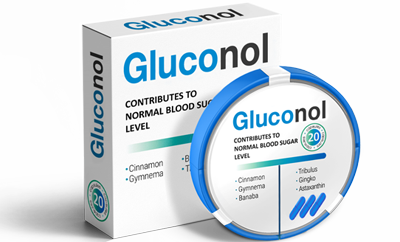

Il dottor Canning si definisce un ex diabetico e assicura che lo stato di compensazione non è affatto il sogno finale. Per saperne di più, abbiamo organizzato un colloquio con un rinomato specialista.
Salve dottore. Non abbiamo tutto il tempo che vorremmo, quindi iniziamo con la cosa principale. Per favore, dicci come tratti il diabete?
La cosa più importante in questo settore è ripristinare la salute del sistema cardiovascolare.
Il corpo umano è dotato di un sistema protettivo che, in casi di emergenza, limita la nutrizione di alcuni organi. I sistemi chiave, invece, sono sempre alimentati con glucosio, non necessitano di insulina. In altre parole, il diabete di tipo 2 colpisce inizialmente solo gli organi insulino-dipendenti, come il fegato o il tessuto adiposo..
Tuttavia, un'aumentata concentrazione di glucosio e insulina non realizzata influisce sullo stato dei vasi sanguigni e dei capillari. Quando il flusso sanguigno diventa difficile, i nostri organi più importanti smettono di ricevere nutrimento. Pertanto, la prima cosa da fare per evitare conseguenze disastrose è pulire le pareti dei vasi sanguigni.
La pulizia regolare del corpo è la via per una vita sana e felice, ne sono convinto.
Cioè, pensi che per sconfiggere il diabete, devi prima ripristinare i vasi sanguigni e non il pancreas?
Giusto. Se si stimola sconsideratamente la produzione di insulina, ciò influenzerà ancora di più la composizione del sangue. Devi solo spostare l'equilibrio ormonale e aumentare il carico sul fegato e sui reni.
Immagina un vecchio acquedotto. Anche se lasci passare l'acqua più pura, all'uscita otterrai un impasto arancione sporco, perché i tubi sono pieni di ruggine e marciume. È molto più saggio pulirli prima e poi pensare a cosa scorrerà attraverso di loro.

E cosa inquina esattamente i nostri “acquedotti”?
Posso indovinare quale risposta ti aspetti. Naturalmente, il cibo malsano e la mancanza di sonno hanno un impatto sulla salute, ma non pensare che tutti i diabetici siano amanti degli hamburger e delle caramelle. Il fattore principale nello sviluppo di tali disturbi è l'età.
Ma può essere compensato con misure tempestive. Frequento regolarmente un corso di purificazione e mi sento benissimo. Ho intenzione di vivere fino a cento anni e non fermarmi qua, soffrivo di diabete di tipo 2, per questo motivo ho anche smesso per un po' di insegnare e vedere i pazienti. Ma questa è una cosa vecchia di 20 anni. Ora non noto più nessun sintomo, la mia glicemia è stabile, non supera 7 mmol/l.
Quali sono i sintomi?
Stanchezza prima di tutto.
Sonnolenza, confusione e disturbi della memoria mi hanno colpito molto duramente. In questo stato, anche una sola lezione era un'impresa per me, quindi ho dovuto ritirarmi.
Sete e minzione frequente ha influito anche sulla qualità della vita. Non hai idea di quanto tempo e sforzi ci siano in cose così semplici. È come una sveglia che suona ogni cinque minuti, strappandoti a qualsiasi attività, compreso il sonno.
Sensazione di fame continua è durato tutto il giorno e la dieta tradizionale per diabetici mi ha fortemente limitato. Di conseguenza, ho perso completamente il piacere del cibo.
L’intorpidimento degli arti mi ha spaventato di più. Ho visto spesso pazienti sviluppare ulcere, il cosiddetto piede diabetico, e a modo mio mi sono abituato a questa vista. Ma è stato spaventoso sentire lo sviluppo di questa malattia, quando sai perfettamente a cosa porta.
Come mai?
Le principali complicanze del diabete:
- Piede diabetico
Tutto inizia con il formicolio degli arti inferiori, quindi la sensibilità diminuisce: questa è la morte delle terminazioni nervose. Quindi si sviluppa la cancrena, molto spesso porta all'amputazione.
- Retinopatia
I capillari degli occhi vengono distrutti e si verifica un'emorragia. Nei casi più gravi, la retina si stacca e il paziente perde la vista per sempre.
- Trombosi
Il diabete aumenta la possibilità di infarto e ictus di 2-3 volte, a seconda dello stadio. È mortale e il rischio aumenta con l'età.
- Nefropatia
L'insufficienza renale si sviluppa in 7 pazienti su 10 con diabete.
- Patologie epatiche
Il diabete provoca una vasta gamma di problemi, come cirrosi e persino il cancro. Il meccanismo è lo stesso delle malattie del fegato: l'efficienza di filtrazione diminuisce e le cellule epatiche vengono sostituite dal tessuto connettivo.
- Coma
Il fegato cerca di compensare i problemi con il metabolismo dei carboidrati con l'aiuto dei corpi chetonici, si tratta di sostanze speciali che scompongono attivamente i grassi per ottenere energia. E poiché il fegato e i reni sono già in cattive condizioni, i corpi chetonici non vengono utilizzati e causano intossicazione. Di conseguenza, il sistema nervoso fallisce.

E come puoi combatterlo?
È meglio non portare il tuo corpo in un tale stato. Un trattamento tempestivo trasforma il diabete da un pericolo mortale in difficoltà temporanee, spiacevoli, ma risolvibili.
Circa 20 anni fa, quando il mio metodo era più sperimentale di quanto generalmente accettato, dovevo cercare e raccogliere le erbe da solo, ordinare ingredienti rari dall'estero e fare decotti. Ma ora pulire le vene è diventata una pratica diffusa
Sulla base dei miei sviluppi (ma non solo miei, ovviamente), hanno creato una composizione equilibrata. Il risultato è stato un prodotto di alta qualità che è recentemente entrato nel mercato internazionale, compreso quello messicano
A quale prodotto ti riferisci?
,di certo. Questo prodotto a base naturale contiene estratti concentrati di erbe medicinali. A differenza di tutte le pillole chimiche, di cui anche io non riesco a leggere la composizione senza un dizionario, non provoca effetti collaterali. In effetti, è per questo che lo consiglio ai miei pazienti.

La sua azione principale è quella di purificare i vasi sanguigni, tuttavia la formula contiene componenti con effetto ipoglicemizzante, che riducono naturalmente la concentrazione di glucosio nel sangue. stabilizza il livello di zucchero.
Mi dispiace, pensavo tu sapessi di lui da molto tempo.
No, ahimè. Non l'ho ancora visto in farmacia.
Non è sorprendente. Innanzitutto perché, ha iniziato a vendere all'estero abbastanza di recente, meno di un anno fa. Per quanto ne so, ha già superato i test clinici nell'UE.
Nota del redattore: presentiamo i risultati di questi studi per chiarezza.
Secondo i controlli di GMP, i risultati dei test sono i seguenti:
Test 1, dopo una settimana dall'ammissione .
- Stabilizzazione dei livelli di zucchero nel range di normalità: 62% dei soggetti.
- Aumentata l'efficacia dei farmaci ipoglicemizzanti nella terapia di mantenimento: 93%
- Miglioramento del benessere rilevato: 80% dei soggetti.
Test 2, dopo un mese di assunzione di .
- Stabilizzazione dei livelli di zucchero nel range di normalità: 92% dei soggetti.
- Migliorare l'efficacia dei farmaci ipoglicemizzanti nella terapia di mantenimento:96%
- Miglioramento del benessere rilevato: 92% dei soggetti.
- Stabilizzazione dei livelli di zucchero nel range di normalità: 98% dei soggetti.
- Aumentare l'efficacia dei farmaci ipoglicemizzanti nella terapia di mantenimento: 97%
- Miglioramento del benessere rilevato: 98% dei soggetti.
Nessun effetto collaterale: 100% dei soggetti, durante tutto lo studio.
E in secondo luogo, non è venduto nelle catene di farmacie. Al contrario, il produttore si oppone alla vendita in farmacia e monitora attentamente che i rivenditori di abbiano un comportamento etico. Vedete, una farmacia è un negozio come un altro, ognuno ha i suoi margini e le sue condizioni. Quindi il modo migliore era vendere il composto attraverso Internet.
Per quanto ne so, c'è uno sconto del 50% sul lotto corrente, il prezzo sarà aumentato dal prossimo. Offerta valida fino al 14.06.2022.
Basta lasciare una richiesta e l'operatore ti richiamerà. Si assicurerà che tu ordini il prodotto per uso personale, ti consiglierà e coordinerà la consegna.
Grazie dottor Canning. Vorresti dire qualcos'altro ai nostri lettori, per dare un consiglio?
Non lasciare che la tua salute vada sprecata, è molto facile lasciarsi prendere dallo sconforto in caso di malattie, ma con le tecniche mediche moderne si può mantenere un ottimo tenore di vita in ogni caso.
 Pietro
Pietro Gino
Gino Dorotea
Dorotea Osvaldo
Osvaldo Matteo
Matteo Camilla
Camilla Roberta
Roberta
Grazie per l'articolo. Ho già ordinato .Il consulente al telefono ha detto che la promozione è a tempo limitato, quindi affrettatevi se volete risparmiare!!